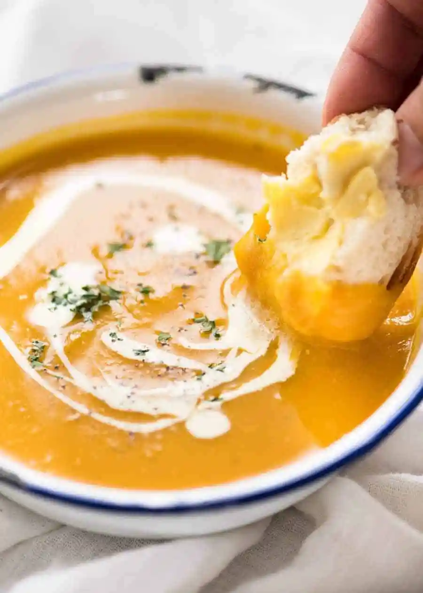

<h1>Pumpkin Soup</h1>

<h2>Description</h2>
This pumpkin soup is perfect for October
<p><h3>Ingredients</h3></p>
<ul>
    <li>Pumpkin</li>
    <li>Water</li>
    <li>Coconut milk</li>
    <li>Herbs</li>
    
</ul>
<h3>Steps</h3>
<ol> 
    <li>Cook 500g pumpkin in water</li>
    <li>When the pumpkin is done mix it with the water</li>
    <li>Add 50ml of coconut milk</li>
    <li>Add herbs as you like</li>
    
</ol>